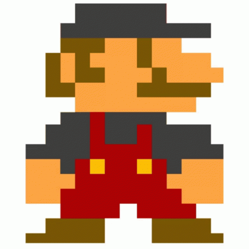

Bienvenue à la nuit du cOde
Durant l’épreuve de la Nuit du c0de, vous disposerez de 6 heures pour créer un jeu avec Python et un module dédié à la création de jeux typés "retros" ( Pyxel ).
Pour cela, vous devrez utiliser l’un des 5 Gamepacks (ou univers de jeu) mis à votre disposition.
Ces gamepacks ne contiennent aucun script, mais possèdent de nombreux lutins, des scènes et des sons.
Réglement et conseils
reglement
Les univers de jeu et les liens fournis sont confidentiels. Ils ne doivent être partagés avec personne d'autre, ni pendant, ni après la NDC.
Le respect des consignes fait partie de l’évaluation du jeu.
- Vous devez choisir un univers de jeu parmi ceux proposés (fichiers .pyxres) ou respecter un des deux thèmes. Prenez le temps de bien étudier les différents univers de jeu avant d'en choisir un. Si vous préférez un des deux thèmes, vous pouvez utiliser le fichier
res.pyxres vide ou n'utiliser que des formes géométriques.
- Vous devez écrire une courte documentation (ou mode d'emploi) de votre jeu. La documentation fait partie de l'évaluation du jeu.
- Vous devez fixer la taille de l’écran à 128x128 (ou 256x256) pixels (
pyxel.init(128, 128, title="Nuit du Code")).
- Vous devez mettre le code de votre jeu dans un seul fichier
.py. Si vous utilisez des images, elles seront dans un deuxième fichier au format .pyxres.
- Il n'est pas autorisé de regarder ou de copier/coller du code trouvé sur internet ou sur votre ordinateur.
- Il n'est pas autorisé d'importer des fichiers contenant du code (fichiers
.py) ou des images (fichiers .pyxres).
- Il n'est pas autorisé de modifier les images des banques d'images des fichiers .pyxres fournis (par contre, vous pouvez utiliser librement les éditeurs de "tilemaps", de sons et de musiques).
- Il n'est pas autorisé d'utiliser une IA, d'aller chercher des informations ou de l'aide sur internet ou sur votre ordinateur.
- Il n'est pas autorisé d'utiliser des notes personnelles ou de la documentation papier autre que celle fournie.
- Il est autorisé, et même conseillé, de demander de l'aide aux enseignants qui encadrent la NDC. Ils ne vous donneront pas un code complet, mais certainement de bons conseils pour avancer.
- Il est autorisé, et même conseillé, de demander de l'aide à vos camarades des autres équipes participantes. La NDC est un événement festif et l'entraide est fortement recommandée.
- Vous n'êtes pas obligé d'utiliser tous les éléments graphiques du fichier
.pyxres.
- Vous avez le droit de dupliquer des lutins si vous en avez besoin.
- Les éléments du jeu vous suggèrent peut-être de créer un jeu que vous connaissez déjà, mais vous êtes tout à fait libre de proposer autre chose.
- Vous avez le droit de faire des « retouches » graphiques mineures sur les lutins ou les scènes: symétrie, rotation, changer une couleur, déformer, ajout de texte… mais attention à ne pas y passer trop de temps. Il est quand même conseillé d'éviter: il y a suffisamment de lutins (et certains ont beaucoup de costumes) pour trouver ce dont vous avez besoin.
- Vous avez le droit de créer des lutins qui serviraient de « capteur » lors des déplacements (juste un rectangle ou un cercle) ou des lutins « texte ».
- Vous n'êtes pas obligé d'utiliser tous les lutins, scènes ou sons de l'univers de jeu.

QUELQUES CONSEILS
- Avant de vous lancer dans le code, prenez le temps d'imaginer votre jeu. Passez en revue les ressources. Prévoyez de réaliser rapidement une version simple, mais jouable de votre jeu. Puis, si vous en avez le temps, rajoutez au fur et à mesure des éléments de complexité: niveau de difficulté, scores, son, etc.
- Vous travaillez à deux ou trois: organisez-vous pour être les plus efficaces possible.
- Pensez à sauvegarder ! Et surtout, effectuez régulièrement des copies incrémentées (version 1, 2, 3…) de votre jeu à chaque amélioration majeure (qui marche) en téléchargeant le fichier ndc.py.
- N'oubliez pas de faire des pauses, d'aller voir ce que font les autres, de boire et de manger !
- Et surtout, rappelez-vous: c'est un jeu ! Amusez-vous !
IMPORTANT: À LA FIN DES 6h
Enregistrez votre jeu sur le site de la NDC en utilisant le lien fourni par votre enseignant. Ce lien vous amènera sur la page d'enregistrement.
Sur cette page, vous devrez indiquer le nom de votre équipe, sélectionner votre catégorie, déposer votre fichier ndc.py et, s'il existe,
le fichier .pyxres et enfin copier-coller la documentation / mode d'emploi du jeu.
Si vous n'avez pas la possibilité de déposer vous-même ces fichiers sur le site, donnez-les à votre enseignant.
CRITÈRES D'ÉVALUATION
Chaque critère est noté sur 5:
- Jouabilité (8 points) ~ un jeu qui ne marche pas ne sera pas évalué ~
- Originalité / Créativité (6 points)
- Respect des consignes (3 points)
- Présentation Mode d'emploi (3 points)